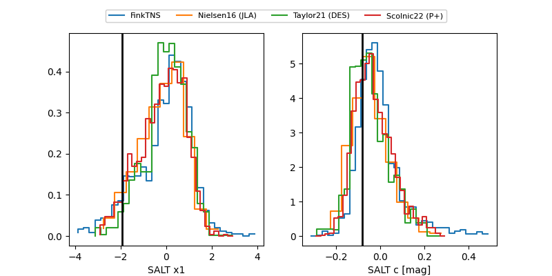

FINK: ZTF25abmsodq
Lasair: ZTF25abmsodq
ALeRCE: ZTF25abmsodq
TNS: 2025wib
YSE: 2025wib
ZTF25abmsodq (ztf,fink)
2025wib (tns,yse)
ATLAS25kuh (atlas)
PS25hpv (panstarrs)
equatorial (ra, dec) = (353.4280,+6.96123)
galactic (l, b) = (91.2331,-51.06354)

last atlasc=18.65, atlaso=19.34, ztfg=19.70, ztfr=19.09
1 atlasc, 4 atlaso, 7 ztfg, 7 ztfr detections